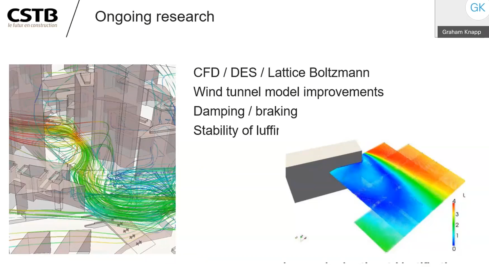

Upon moving to work at the French national scientific research organisation for the built environment, CSTB, I was surprised to see the attention to detail in tower crane studies - looking at the risk of strong winds, construction site exposure and swirling winds potentially setting tower cranes rotating.
Following some LinkedIn posts and academic articles on the subject I was invited by the UK Wind Engineering Society to give an online talk. I gave some of the history of the subject, the key factors influencing risk levels and the methods used by the CSTB and by French insurers to assess and reduce risk levels.

The Lothar and Martin winter storms of 1999 were a wake-up call for the French construction industry : two particularly violent winter storms swept the country in the space of several days causing multiple tower cranes to collapse.
This led to a long-term research project at the CSTB and a new methodology for the study of dynamic stability of tower cranes including desk study and wind tunnel analysis methods to identify and mitigate the risk of crane autorotation due to surrounding buildings and to quantify dynamic loads on the crane and its foundations. This method is underpinned by the national site-safety certification and insurance system.
This talk covers the main technical considerations, the different techniques used as well as the legal framework in which it operates.
wind-engineering talks